Six updates from Joe's list, drawn as phone-size mockups in light and dark before any code is written. Screens use sample data. Nothing here is built yet; say what to change and I'll do another round.
Right now every name you save becomes a new tile, and the grid grows by a row for every 4. In testing, 5 of your own tiles already pushed Save behind the tab bar, and 12 hid both the note and Save. In this version the main grid always keeps the original 8 tiles. Everything you've added lives in a pop-up behind Other.
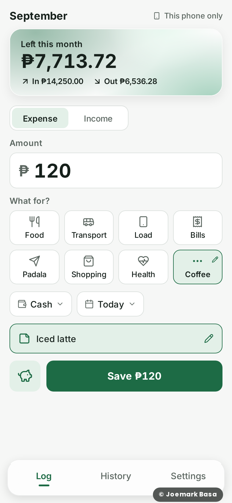
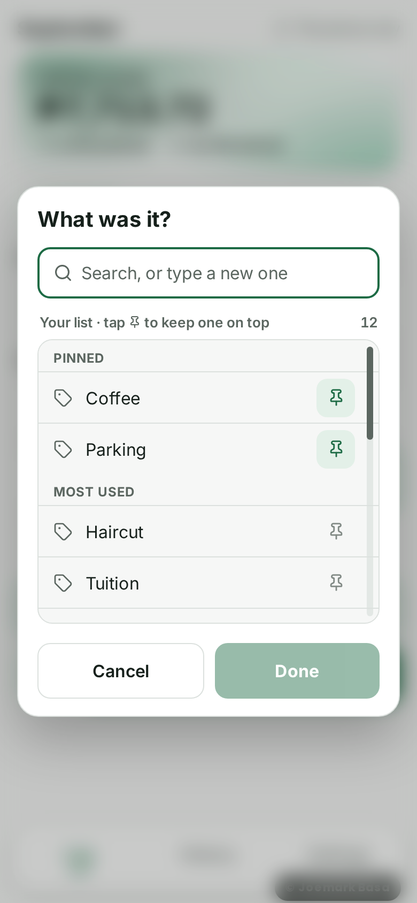
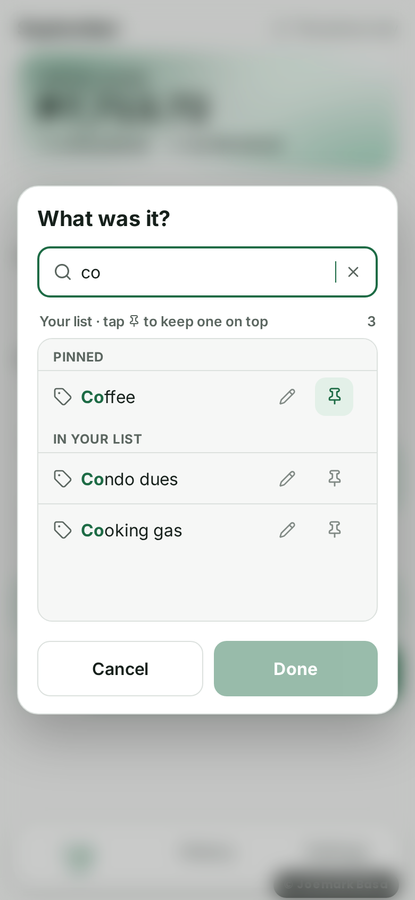
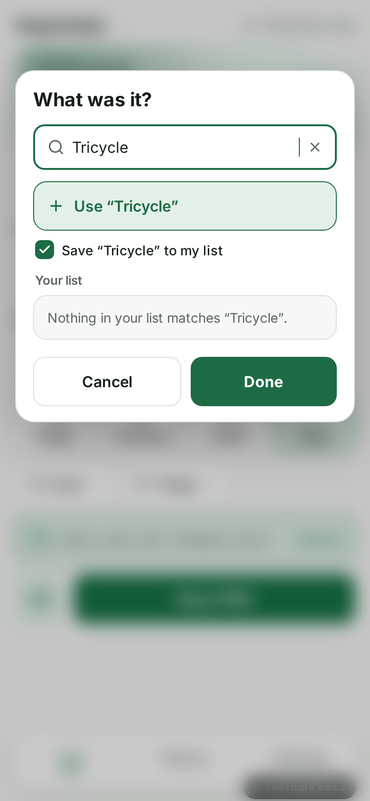
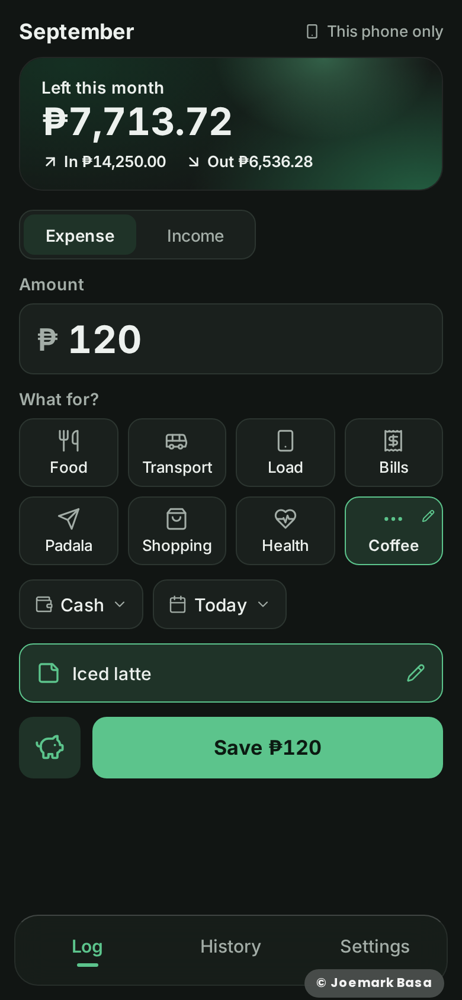
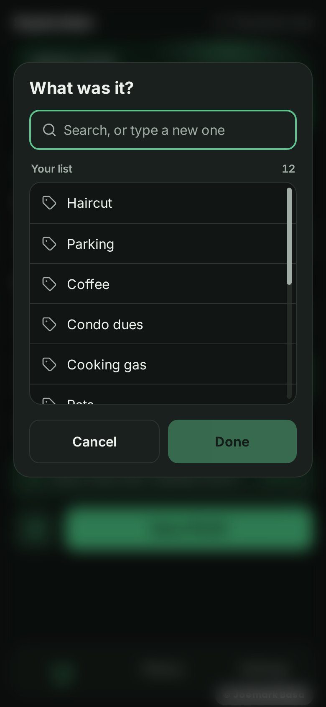
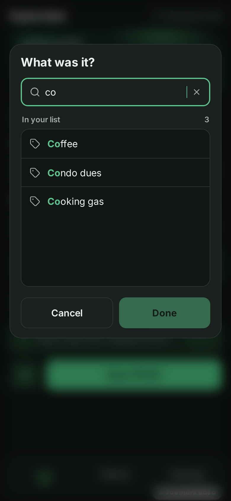
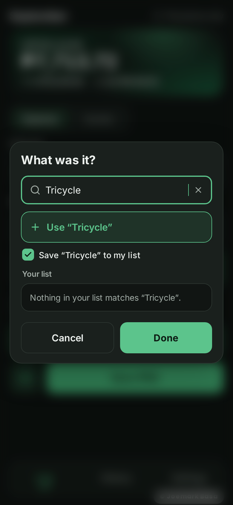
From your round 2 notes: the pop-up is now centered on the screen, names can be pinned, and the rest are sorted by most used. Pins need one more column on the settings table, added to the same supabase/migration-v3.1.sql your agent runs tonight, so nothing extra to run.
Already on the branch. These screenshots are from the real app, not mockups. Tapping an entry in History shows everything about it, with Edit at the top.
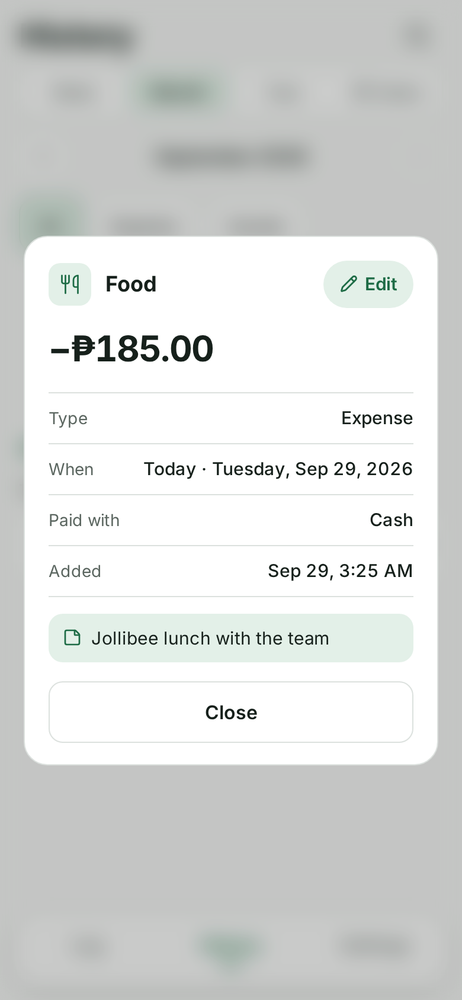
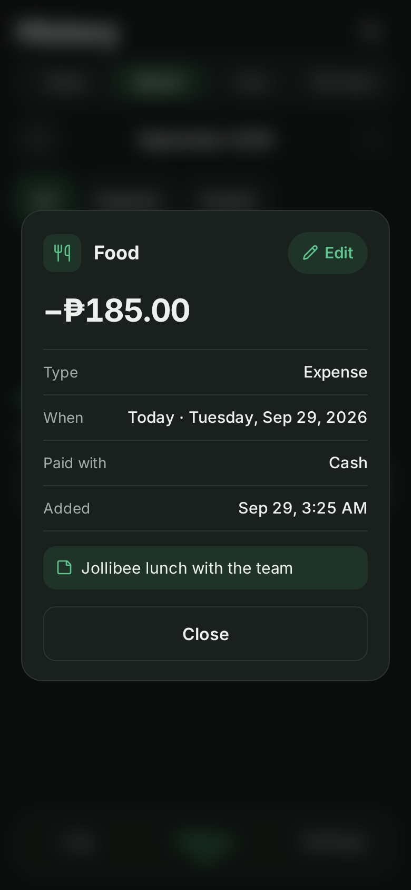
Settings gets a new Color theme row under Appearance. Tapping it opens a picker with 8 themes, each drawn as a small preview of the top card. The whole app follows the pick: the top card's glow, Save, the selected tile, the tab underline and the note box. Light and dark both follow it.
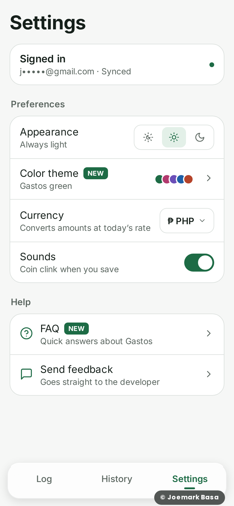
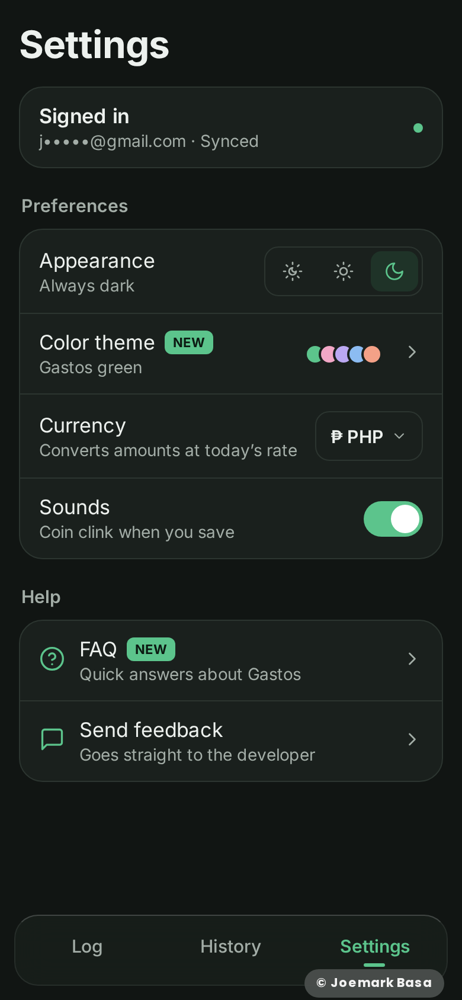
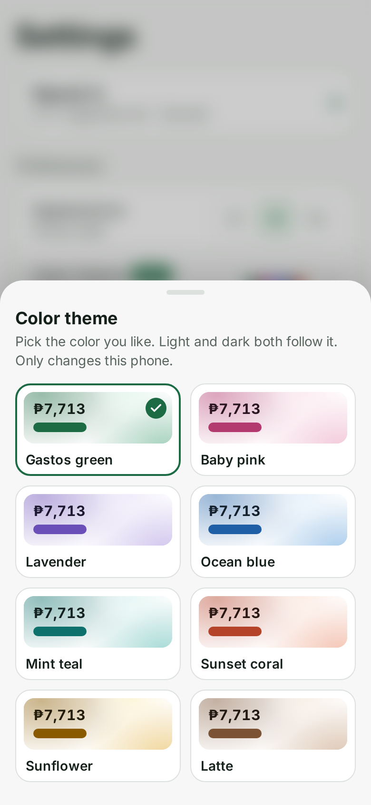
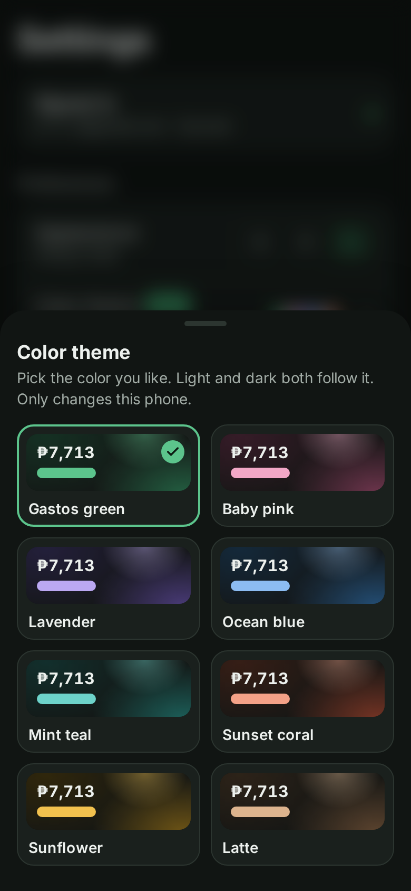
I couldn't open the visme.co page you linked: this workspace's network blocks that site. I made the palettes myself in the same soft, pastel spirit. If a scheme on that page catches your eye, send me its name or a screenshot and I'll add it or swap one out.
A new Help section in Settings with FAQ above Send feedback. It opens a sheet of common questions that expand when tapped, with a search box on top. Answers work offline because they ship inside the app.
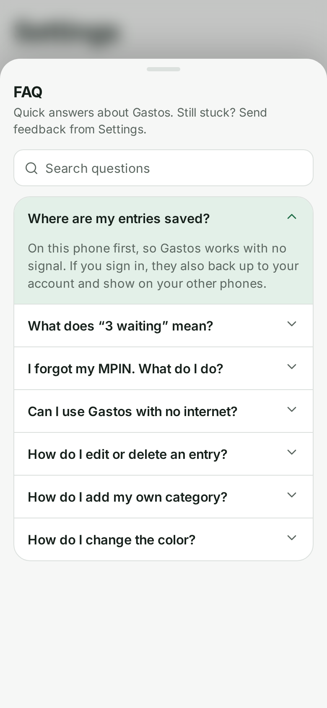
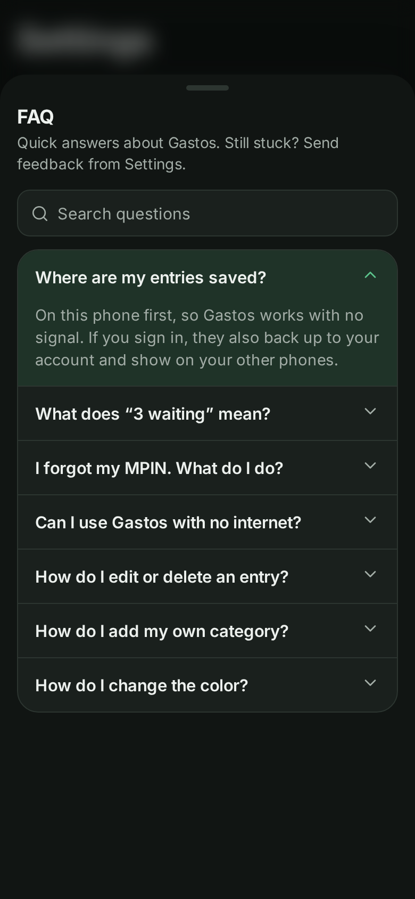
Every pop-up and bottom sheet blurs the screen behind it: Save / Delete / Sign out confirmations, Paid with, Date, Categories, the theme picker and the FAQ. The dark tint is a bit lighter than today, because the blur already separates the pop-up from the screen behind it.
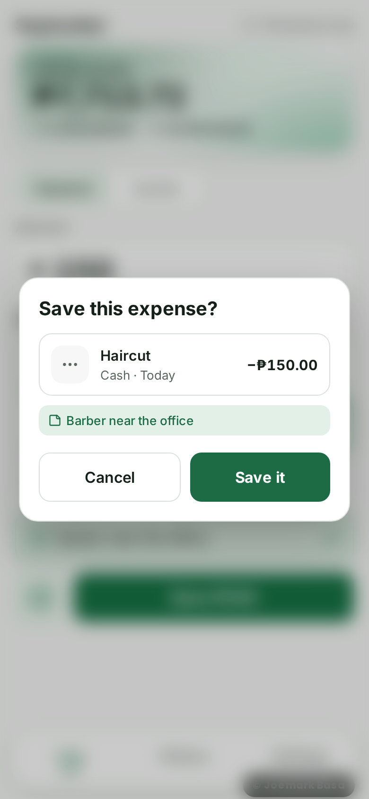
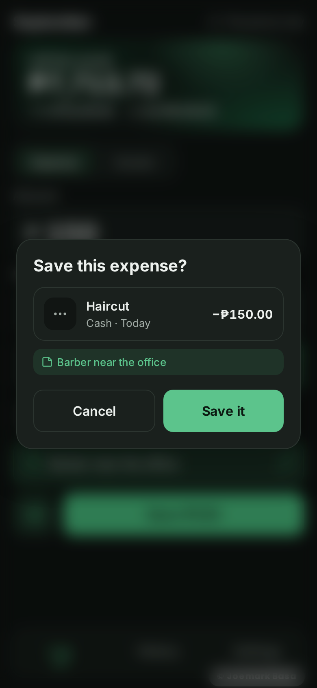
The blur shows on the web app, the installed home-screen app and the Android app, which covers every way Gastos is used today.
This one has no new screen. The intended behavior stays the same as the 3.0 notes: Back closes the open sheet or pop-up without saving or deleting anything, goes from History or Settings to Log, and on Log shows “Press back again to exit”.
Likely cause. Gastos adds a “spare” step to the browser history so Back has something to undo. It adds that step when the app opens and again right after each Back, when you haven't tapped anything. Chrome, which also runs the Android app, now skips history steps a page adds without a tap. So Back jumps straight past Gastos and closes the app.
Fix plan. Where the phone supports Chrome's built-in way to catch Back for pop-ups (Android Chrome and the Android app), use that. Everywhere else, add the spare history step only right after a real tap. Then I test it in an Android-sized browser. The final check is yours on a real phone, as with v3.
Reported on: the Android app (APK), Android Chrome and the home-screen app, and iPhone. The fix covers all the Android cases. On iPhone, a home-screen app has no Back button, and Safari's edge swipe doesn't go back inside it. That's an iOS limit, so on iPhone every sheet and pop-up keeps its Cancel or X, and you can tap outside it to close it.
Tapping Other opens a centered “What was it?” pop-up. Pick a name from your list, or type a new one. The name becomes the entry's category, so History shows “Haircut” instead of “Other”, and the Other tile shows it too. New names are saved to your list for next time (ticked by default). The main grid always stays at the original 8 tiles. The full design is in Round 3 above.
The small dashed “+ Note” chip becomes a full-width box in the theme's color, sitting right above Save with a hint: “Add a note, like ‘Jollibee lunch’”. The keyboard still opens only when you tap it. Before saving, the pop-up shows the note in its own colored line, so it's easy to check. Decided: the colored box, as drawn.
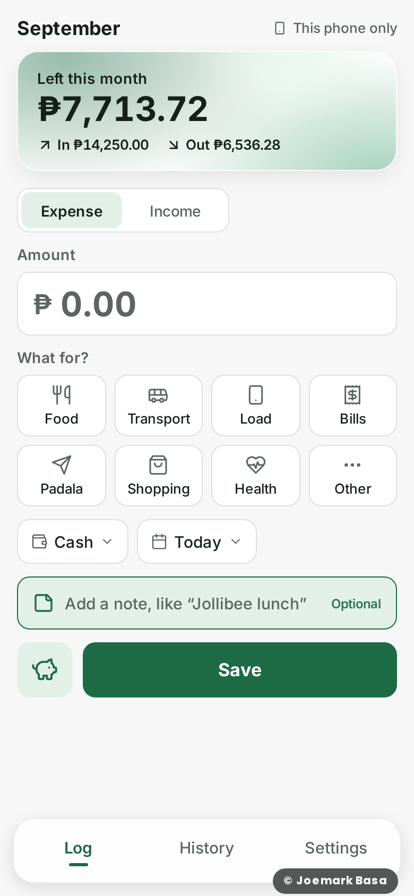
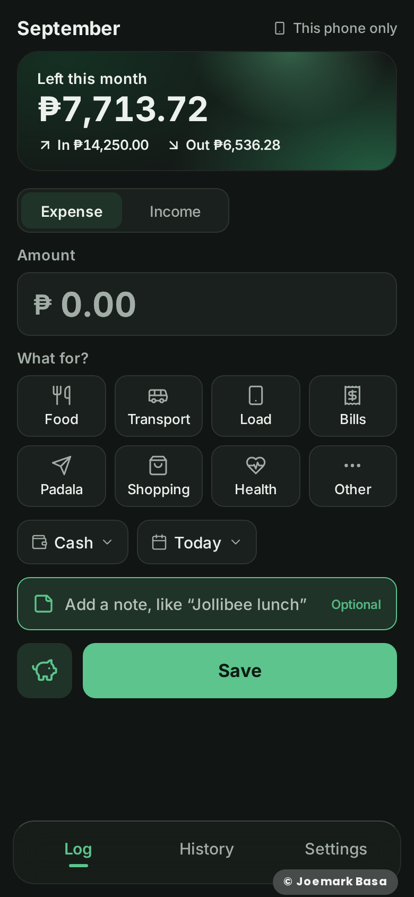
supabase/migration-v3.1.sql). It adds a color_theme column to the settings table, limited to the 8 theme names. Existing access rules already cover it. Older app versions leave it alone, and the new app keeps working if it runs before the file is applied.